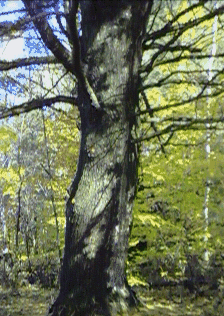

Williston Central School

The Witness Tree
The tree we went to visit is located in Williston, Vermont. The tree is called a Witness Tree because it is an old tree that farmers left to grow big-the reason for this was to separate 3 properties. This is a boundary marker tree and this is why it is called a Witness Tree. The tree is over 300 years old, 150' tall and its circumference is 143 inches. It took 4 kids to hug the tree. A third grade class at our school was afraid the tree would be cut down so they asked the president of the University of Vermont to save the tree by preserving it a as landmark.
by
Kyle, 3rd grade
Sam, 4th grade
Nick, 3rd grade


The Wolf Tree
by Jared Robllard and Nick Archdeacon
A long time ago a tiny tree broke out of the soil in a big field. It grew up and now the field is gone and a forest surrounds it. That tree was a Wolf Tree. People from Williston Central School found this forest and started searching this area, one of them was Mr. Allen. They thought this forest would be a great peaceful place to walk on. they named it Allen Brook Nature Trail. Our class is studying trees, and we even got to see the Wolf Tree a few times.
Here are some facts about the Wolf Tree: The Wolf Tree is a white pine. The circumference is 120" or 10 feet. The diameter is 60" or 5 ft. It took 3 kids from our class to surround the tree with their hands.
 Return to Main Page
Return to Main Page
Comments
Please send e-mail to: June Julian jj68@nyu.edu